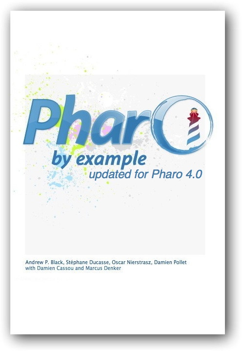

About this book

Pharo by Example, intended for both students and developers, will guide you gently through the Pharo language and environment by means of a series of examples and exercises.
Topics
The book helps you get started with A Quick Tour of Pharo and guides you through A First Application. The Smalltalk language is introduced in the chapters Syntax in a Nutshell and Understanding Message Syntax.
Development with Pharo is introduced in The Smalltalk Object Model, The Pharo Programming Environment and SUnit. Several of the key classes are presented in chapters on Basic Classes, Collections, Streams and Morphic. A chapter dedicated to Seaside by Example introduces web application development with the popular Seaside framework.
The first edition of the book concludes with chapters on Classes and Metaclasses, Reflection and Frequently Asked Questions.
An open book
This book is open in the following senses:
- The full book is available as a free, printable PDF download.
- You can also order a softcover copy of the book from Lulu or Amazon. You can also pay for the PDF from the same web site, if you like, but you are under no obligation! (We are happy if you would like to make a contribution.)
- The content of this book is released under a Creative Commons Attribution-ShareAlike license. In short, you are allowed to freely share and adapt this book, as long as you respect the conditions of the license. You may download the LaTeX sources from the publicly-accessible github repository.
- Source code of various projects described in the book is available as open-source from SqueakSource.
We would like to see this book grow! We encourage you to contribute chapters on the parts of Pharo that we have not described. If you would like to participate, please contact us.